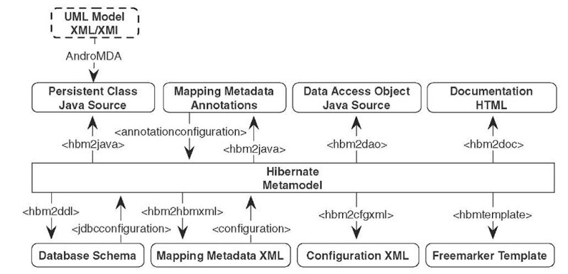

Wyklad 4
Mapowanie obiektowo - relacyjne
JDBC
Relacyjne bazy danych a świat obiektowy
- Aplikacje tworzą, zarządzają i przechowują informacje strukturalne
- Programiści wybierają języki obiektowe
- Zapisywanie i pobieranie danych wymaga znajomości SQL
Dostęp do danych za pomocą JDBC
- Bardzo dobrze znane API
- Wymaga dobrej znajomości SQL
- Łącze do baz danych dla języka Java
JDBC - jak to działa
@Service public class CustomerServiceImpl {
private static final String FIND_ALL_LIBRARIES_IN_CITY_SQL =
"SELECT l.id, l.name, l.address_id FROM Library l, Address a
WHERE l.address_id = a.id AND a.city = :city";
@Autowired private NamedParameterJdbcOperations jdbcTemplate;
@Autowired private LibraryRowMapper mapper;
public List<LibraryTO> findAllLibrariesInCity (String cityName) {
SqlParameterSource params = new MapSqlParameterSource("city", cityName);
return jdbcTemplate.query(FIND_ALL_LIBRARIES_IN_CITY_SQL, params, mapper);
}
- Konieczność definiowania zapytań SQL
- Spring NamedParameterJdbcOperations do wykonywania instrukcji SQL
- Spring RowMapper do mapowania wyniku zapytania na obiekt
JDBC - spring RowMapper
Implementacja interfejsu RowMapper
@Component
public class LibraryRowMapper implements RowMapper<LibraryTO> {
@Override
public LibraryTO mapRow(ResultSet rs, int rowNum) throws SQLException {
LibraryTO library = new LibraryTO();
library.setId(rs.getLong(1));
library.setName(rs.getString(2));
library.setAddress(mapAddressById(rs.getLong(3)));
return library;
}
private AddressTO mapAddressById(Long addressId) {
if (addressId != null && Long.compare(0, addressId) != 0)
return new AddressTO(addressId));
return null;
}
JDBC - wady
- Wymaga pisania dużej ilości dodatkowego kodu
- Trudne mapowanie wyniku SQL na obiekty biznesowe
- Kod związany z trwałością danych narażony na błędy programistów
- Brak przenośności kodu, implementacja zależna od bazy danych
- Implementacja bardzo trudna w utrzymaniu
- Ewentualne błędy w zapytaniach SQL widoczne dopiero w trakcie działania programu
- Kod nietestowalny
ORM
Odwzorowanie obiektowo-relacyjne
- Przekształcenie obiektów w encje bazy danych i odwrotnie
- Przekształcenie połączeń między obiektami na relacje bazy danych
- Przekształcenie obiektowego języka zapytań na SQL
- Spójny sposób obsługi różnych baz danych - przenośność
- Zapewnienie trwałości obiektów
- Ochrona programisty przed czasochłonnym SQL-em
- Pozwala skupić się na implementacji logiki biznesowej
- Zapewnienie stałych technik optymalizacyjnych
- Oddzielenie warstwy dostępu do danych od biznesu
Odwzorowanie obiektowo-relacyjne
Niedopasowanie paradygmatów relacyjno-obiektowych| Podobieństwa | Różnice |
|---|---|
| Klasy i tabele | Szczegółowość |
| Właściwości i kolumny | Dziedziczenie (java) |
| Instancje i wiersze | Kolekcje (java) |
| Identyczność (==, equals vs PK) | |
| Nawigacja po grafie obiektów |
Podstawowym zadaniem ORM jest rozwiązanie wrodzonych niezgodności pomiędzy obiektami i bazami danych
Hibernate a JPA
Hibernate
- Gavin King rozpoczął prace nad biblioteką pod koniec 2001 roku
- Zespół na bieżąco realizował prośby użytkowników
- Zgodny ze standardem JPA**
- Możliwość traktowania Hibernate jako dostawcy trwałości
- Możliwość używania bibliotek JPA, takich jak np. Spring-Data-Jpa
- Oddziela kod biznesowy od warstwy dostepu do danych
Hibernate a development
Hibernate a JPA
- JPA - Java Persistence API
- Hibernate jest implementacją JPA
- Tak długo jak w projekcie używa się Hibernate można z jego adnotacji korzystać zamiennie z adnotacjami JPA
- Jeśli planujemy kiedyś zmienić ORM, to warto ograniczyć się do adnotacji JPA
Encja a POJO
public class LibraryEntity {
private String name;
private String domain;
public LibraryEntity () {
}
public String getName() { return name; }
public void setName(String name) { this.name = name; }
public String getDomain() { return domain; }
public void setDomain(String domain) { this. domain = domain; }
}
Encja a POJO
@Entity
public class LibraryEntity {
@Id
private Long id;
@Column(name = "name", length = 30, nullable = false)
private String name;
@Column(name = "domain", length = 5, nullable = true)
private String domain;
public LibraryEntity () {
}
// getters and setters
}
Adnotacje dla Encji
@Entity
@Table(name = "LIBRARY", schema = "public")
@Access(AccessType.FIELD)
public class LibraryEntity {
@Id
@GeneratedValue(strategy = GenerationType.AUTO)
private Long id;
@Column(name = "name", length = 30, nullable = false)
private String name;
@Lob
@Column(nullable = false)
private String description;
private String city;
@Access(AccessType.PROPERTY)
public String getCity () { ... }
public LibraryEntity () { }
}
Adnotacje dla Encji
- @Entity - oznacza klasę, odzwierciedla tabelę BD
- @Entity(name="…") - nigdy nie używać
- @Access - decyduje gdzie umieszczać adnotacje
- @Table - zmienia domyślną nazwę tabeli BD
- @Id - oznacza atrybut jako klucz główny
- @GeneratedValue - auto generacja wartości PK
- @Column - pozwala ustawić wartości kolumny
- @Lob - typ dla dużych danych tekstowych
- @Enumerated(EnumType.STRING) - enumy
- @Transient - wyłączenie pola z persystencji
- @MappedSuperclas - zwykłe dziedziczenie
Typy Embedded
@Embeddable
public class PersonalData {
private String firstName;
private String lastName;
@Column (columnDefinition=" DATE", nullable = false)
private Date birthDate;
public PersonalData() {
}
// getters & setters
}
Typy Embedded
@Entity
public class AuthorEntity {
@Embedded
@AttributeOverrides({
@AttributeOverride(
name = "firstName",
column = @Column(
name = "FIRST_NAME",
nullable = false)),
@AttributeOverride(
name = "lastName",
column = @Column(
name = "LAST_NAME",
nullable = false))})
vate PersonalData personalData;
...
}
Generowanie kluczy głównych - Strategie
@Id
@GeneratedValue(strategy = GenerationType.AUTO)
private Long id;
@Id
@SequenceGenerator(name = "bookGen", sequenceName = "BOOK_SEQ")
@GeneratedValue(strategy = GenerationType.SEQUENCE,
generator = "bookGen")
private Long id;
Generowanie kluczy głównych - Strategie
@Id
@TableGenerator(
name="bookGen",
table="ID_GEN", // opcjonalnie
pkColumnName="GEN_KEY", // opcjonalnie
valueColumnName="GEN_VALUE", // opcjonalnie
pkColumnValue="BOOK_ID_GEN") // opcjonalnie
@GeneratedValue(strategy = GenerationType.TABLE, generator = "bookGen")
private Long id;
Cykl życia encji
- Adnotacje jako metadane opisujące mapowanie pomiędzy obiektem a bazą
- Cykle życia encji:
- nowy (new) - brak identyfikatora i powiązania z kontekstem persystencji
- zarządzany (managed) – encja posiada ID i jest powiązana z kontekstem persystencji
- odłączony (detached) – encja posiada ID ale nie jest powiązana z kontekstem persystencji
- usunięty (removed) – tak jak zarządzany, ale oznaczona jako „do usunięcia”
Cykl życia encji

Listenery
- @PrePersist
- @PostPersist
- @PreUpdate
- @PostUpdate
- @PostLoad
- @PreRemove
- @PostRemove
Listenery wewnątrz encji
@Entity
@Table(name = "CUSTOMER_CARD")
public class CustomerCardEntity {
@Id
@GeneratedValue(strategy = GenerationType.AUTO)
private Long id;
@Column(nullable = false)
private String serialNumber;
@PrePersist
public void generateDefaultSerialNumber() {
serialNumber = new SerialNumberGenerator().generate();
}
}
Listenery stand alone
@Entity
@Table(name = "CUSTOMER_CARD")
@EntityListeners(CustomerCardListener.class)
public class CustomerCardEntity {
@Id
@GeneratedValue(strategy = GenerationType.AUTO)
private Long id;
@Column(nullable = false)
private String serialNumber;
}
Listenery stand alone
public class CustomerCardListener {
@PrePersist
public void generateDefaultSerialNumber
(CustomerCardEntity customerCardEntity) {
String serialNumber = new SerialNumberGenerator().generate();
customerCardEntity.setSerialNumber(serialNumber);
}
}
Entity Manager
- Podstawowy element całej warstwy persystencji
- Zarządza transakcjami i encjami
String unitName = "MyPersistenceUnit";
// utwórz
EntityManagerFactory emf = Persistence.createEntityManagerFactory(unitName);
EntityManager em = emf.createEntityManager();
// zrób co masz do zrobienia
zrobCos(em);
// zamknij
em.close();
emf.close();
Entity Manager - dostęp do danych
- Podstawowy element całej warstwy persystencji
- Zarządza transakcjami i encjami
// zapis
Product banan = new Product(1, "banan", "owoce");
em.persist(banan);
// odczyt
Product bananFromDB = em.find(Product.class, 1);
// usunięcie
Product bananFromDB = em.find(Product.class, 1);
em.remove(bananFromDB);
// zapytanie
Product product = em.createQuery(
"SELECT p FROM Product p WHERE p.category = :cat_param", Product.class)
.setParameter("cat_param", "owoce")
.getSingleResult();
Relacje
- @OneToOne – encja A może mieć relację do dokładnie jednej encji B
- @OneToMany – encja A może mieć relację do kilku encji B
- @ManyToOne – wiele encji A może mieć relację do dokładnie jednej encji B
- @ManyToMany – wiele encji A może mieć relację do wielu encji B
- Tworzy tabelę asocjacyjną
Relacje
- Wyróżniamy relacje:
- jednokierunkowe
- dwukierunkowe
@OneToOne - jednokierunkowa
@Entity
public class User {
@OneToOne(
cascade = CascadeType.ALL, // default: empty
fetch = FetchType.LAZY, // default: EAGER
optional = false) // default: true
private Address address;
}
@Entity
public class Address {
}
@OneToOne - dwukierunkowa
@Entity
public class User {
@OneToOne
@JoinColumn(name = "ADDRESS_FK")
private Address address;
}
@Entity
public class Address {
@OneToOne(mappedBy = „address”)
private User user;
}
- mappedBy określa właściciela relacji
- użytkownik ma klucz obcy do adresu
- bez mappedBy klucz obcy po obu stronach
@OneToMany / @ManyToOne - jednokierunkowa
@Entity
public class User {
@OneToMany(
cascade = CascadeType.ALL, // default: empty
fetch = FetchType. EAGER) // default: LAZY
@JoinColumn(name = "user_id")
private Collection<Address> addresses;
}
@Entity
public class Address {
}
- bez @JoinColumn utworzona zostanie tabela asocjacyjna
@OneToMany / @ManyToOne - dwukierunkowa
@Entity
public class User {
@OneToMany(mappedBy = "user")
private Collection<Address> addresses;
}
@Entity
public class Address {
@ManyToOne
@JoinColumn(name = "ADDRESS_FK", nullable = false)
private User user;
}
- mappedBy tak samo jak @JoinColumn usuwa tabelę asocjacyjną
@ManyToMany - jednokierunkowa
@Entity
public class User {
@ManyToMany(
cascade = CascadeType.ALL, // default: empty
fetch = FetchType. LAZY) // default: EAGER
@JoinTable(name = "USER_ADDRESS",
joinColumns = {@JoinColumn(
name = "USER_ID",
nullable = false,
updatable = false)},
inverseJoinColumns = {@JoinColumn(
name = "ADDRESS_ID",
nullable = false,
updatable = false)})
private Collection<Address> addresses;
}
@ManyToMany - dwukierunkowa
@Entity
public class Address {
@ManyToMany(mappedBy = "user")
private Collection<User> users;
}
- bez mappedBy dwie tabele asocjacyjne zostaną stworzone
Kaskady
- Entity Manager dokonuje zmian na danej encji, np. persist
- Kaskady umożliwiają operację na encji połączonej relacją
- PERSIST
- MERGE
- REMOVE
- ALL
Kaskady
@Entity
@Table(name = "BOOK")
public class BookEntity {
@OneToOne(cascade = CascadeType.ALL, mappedBy = "book")
private BookSpoilerEntity bookSpoiler;
}
Dziedziczenie
- Naturalna właściwość obiektów
- Nie ma zastosowania w relacyjnych bazach danych
- Rozwiązaniem Hibernate są trzy strategie:
- SINGLE_TABLE
- TABLE_PER_CLASS
- JOINED
- Możliwość wykonywania zapytań polimorficznych
Strategie: Single Table
- Podobne obiekty przechowywane są w jednej tabeli
- Rekordy rozróżniane są przez tzw. Dyskryminator
- Wydajne wyszukiwanie – brak złączeń
- Puste kolumny (różnice między obiektami)
- Problem z warunkiem Not-Null.
Strategie: Single Table
@Entity
@Table(name = "AUTHOR")
@DiscriminatorColumn(name = "TYPE", length = 6,
discriminatorType = DiscriminatorType.STRING)
@Inheritance(strategy = InheritanceType.SINGLE_TABLE)
public abstract class AuthorEntity {
@Id
@GeneratedValue(strategy = GenerationType.AUTO)
protected Long id;
@Column(nullable = true, length = 30)
protected String nickName;
}
Strategie: Single Table
@Entity
@DiscriminatorValue("WRITER")
public class WriterEntity extends AuthorEntity {
@Enumerated(EnumType.STRING)
private LiteraryGenre literaryGenre;
}
Strategie: Single Table
@Entity
@DiscriminatorValue("PROFES")
public class ProfessorEntity extends AuthorEntity {
@Column(nullable = true)
private String university;
}
Strategie: Single Table

Strategie: Table per class
- Oddzielna tabela bazy danych na jedną encję
- Brak porblemów z warunkami Not-Null
- Redundancja wspólnych atrybótów
- Niewydajne zapytania SQL przy zapytaniach polimorficznych
Strategie: Joined
- Bazowe obiekty zapisane są w jednej tabeli
- Różnice między obiektami zapisywane są w oddzielnych tabelach
- Znormalizowana baza danych
- Brak redundancji
- Wymagane złączenie tabel przy zapytaniach polimorficznych
Strategie: Joined
@Entity
@Table(name = "BOOK_EXEMPLAR")
@Inheritance(strategy = InheritanceType.JOINED)
public abstract class BookExemplarEntity {
@Id
@GeneratedValue(strategy = GenerationType.AUTO)
protected Long id;
@Column(nullable = false, length = 15, unique = true)
protected String serialNumber;
}
Strategie: Joined
@Entity
@Table(name = "PAPER_BOOK")
@PrimaryKeyJoinColumn(name = "book_ex_id", referencedColumnName = "id")
public class PaperBookExemplarEntity extends BookExemplarEntity {
private int pagesCount;
@Enumerated(EnumType.STRING)
@Column(nullable = false)
private PaperSize paperSize;
@Enumerated(EnumType.STRING)
@Column(nullable = false)
private BookCover bookCover;
}
Spring Data
Czym jest Spring Data JPA
- kolejna warstwa abstrakcji
- która pozwala pisać mniej kodu!
Bez Spring Data
@Repository
@Transactional(readOnly = true)
class AccountDaoJpaImpl implements AccountDao {
@PersistenceContext
private EntityManager em;
@Override
@Transactional
public Account save(Account account) {
if (account.getId() == null) {
em.persist(account);
return account;
} else {
return em.merge(account);
}
}
@Override
public List<Account> findByCustomer(Customer customer) {
TypedQuery query = em.createQuery("select a from Account a where a.customer = ?1", Account.class);
query.setParameter(1, customer);
return query.getResultList();
}
}
Z Spring Data!
public interface AccountRepository extends
JpaRepository<Account, Long> {
List<Account> findByCustomer(Customer customer);
}
Query by Convention
public interface CustomerRepository extends CrudRepository<Customer, Long> {
List<Customer> findByLastName(String lastName);
List<User> findByEmailAddressAndLastname(String emailAddress, String lastname);
}
@Query
public interface UserRepository extends JpaRepository<User, Long> {
@Query("select u from User u where u.firstname = :firstname or u.lastname = :lastname")
User findByLastnameOrFirstname(@Param("lastname") String lastname, @Param("firstname") String firstname);
@Modifying
@Query("update User u set u.firstname = ?1 where u.lastname = ?2")
int setFixedFirstnameFor(String firstname, String lastname);
}
Podsumowanie
- Dziedziczenie z CrudRepository daje CustomerRepository dostęp do metod, które operują na encji Customer takich jak: save, delete, findAll, findOne
- Spring Data JPA pozwala na definiowanie innych zapytań poprzez zwykłą deklarację sygnatury metody: fingByLastName.
- Brak implementacji interfejsu
- Wszystkie metody są wykonywane w transakcji
Query DSL
- Powstał z potrzeby utrzymywania zapytań HQL w formie bezpiecznej z perspektywy typizacji
Query DSL
@PersistenceContext
private EntityManager em;
JPAQueryFactory queryFactory = new JPAQueryFactory(this.em);
// Metoda
QCustomer customer = QCustomer.customer;
Customer result = queryFactory.selectFrom(customer)
.where(customer.firstName.eq("Bob"),
customer.lastName.eq("Wilson"))
.fetchOne();
Query DSL - sortowanie
QCustomer customer = QCustomer.customer;
List<Customer> results = queryFactory.selectFrom(customer)
.orderBy(customer.lastName.asc(), customer.firstName.desc())
.fetch();
Query DSL - grupowanie
List<Customer> results = queryFactory.select(customer.lastName).from(customer)
.groupBy(customer.lastName)
.fetch();
Query DSL - usuwanie
QCustomer customer = QCustomer.customer;
// delete all customers
queryFactory.delete(customer).execute();
// delete all customers with a level less than 3
queryFactory.delete(customer).where(customer.level.lt(3)).execute();
Query DSL - Klauzula Where
- przyjmuje predykat bądź listę predykatów
- Predykat to Typ i interfejs, jego implementacje są poniżej
Query DSL - BooleanExpression
QLegoSet legoSet = QLegoSet.legoSet;
BooleanExpression ex = legoSet.legoName.eq("");
ex = ex.and(legoSet.legoName.contains("asdf"));
ex = ex.and(legoSet.legoVersion.isNull());
Query DSL - BooleanBuilder
QLegoSet legoSet = QLegoSet.legoSet;
BooleanBuilder builder = new BooleanBuilder();
if (status != null) {
builder.and(legoSet.legoStatus.eq(status));
}
if (StringUtils.isNotBlank(externallId)) {
builder.and(legoSet.legoName.eq(externallId));
}
Predicate p = builder.getValue();
Transakcje
Transakcje
- Zbiór operacji na bazie danych stanowiących jedną całość
- Zmieniają spójny stan bazy danych w inny spójny stan
- Cechy transakcji:
- Atomowość (Atomicity)
- Spójność (Consistency)
- Izolacja (Isoation)
- Trwałość (Durability)
Transakcje - Entity Manager
// rozpoczyna transakcję
em.getTransaction().begin();
// wykonanie operacji
Product prodFromDb = em.find(Product.class, 1);
prodFromDb.setCategory("newCategory");
// zatwierdzenie transakcji
em.getTransaction().commit();
// ewentualne wycofanie transakcji
em.getTransaction().rollback();
- Najlepszy sposób budowania transakcyjnych aplikacji Spring
- Brak powielonego kodu
- Bardzo łatwa konfiguracja
- Propagacja, izolacja, timeout, readOnly, rollbackFor itp.
- Możliwość zdefiniowania na całej klasie i metodzie
@Transactional
@Service
@Transactional(readOnly = true)
public class LibraryServiceImpl implements LibraryService {
@Autowired
private LibraryRepository libraryRepository;
@Autowired
private MapperFacade mapper;
@Override
public List<LibraryTO> findAllLibraries () {
List<LibraryEntity> libraries = libraryRepository.findAll();
return mapper.mapAsList(libraries, LibraryTO.class);
}
}
Testowanie
Po co testy?

Jakie testy warto tworzyć
- Jednostkowe
- Integracyjne
- Komponentowe
- E2E
- Akceptacyjne
Jakie narzędzia wykorzystywać przy tworzeniu testów
- Mockowanie zależności
- Asercje
- given-when-then
- Continuous Integration
- Argument Captors
- ...
Test Jednostkowy z wykorzystaniem MockMVC
@EnableWebMvc
@ComponentScan("org.itsurvival.books.rest")
public static class BooksRestServiceTestConfiguration {
@Bean
public BookService bookService() {
return Mockito.mock(BookService.class);
}
}
private MockMvc mockMvc;
@Autowired
private WebApplicationContext webApplicationContext;
@Autowired
private BookService bookService;
@Captor
private ArgumentCaptor<BookSearchCriteria> bookSearchCriteriaCaptor;
@Captor
private ArgumentCaptor<BookTo> bookCaptor;
@Test
public void shouldAddNewBook() throws Exception {
// given
byte[] content = readFileToBytes(
"classpath:org/itsurvival/books/rest/newBook.json");
when(bookService.addBook(any(BookTo.class)))
.thenAnswer(args -> args.getArguments()[0]);
// when
mockMvc.perform(post("/services/book")
.content(content)
.contentType(MediaType.APPLICATION_JSON))
// then
.andExpect(status().isOk())
.andExpect(jsonPath("$.title", is("Test title")));
verify(bookService).addBook(bookCaptor.capture());
BookTo book = bookCaptor.getValue();
assertThat(book.getTitle()).isEqualTo("Test title");
assertThat(book.getAuthor()).isEqualTo("Test author");
assertThat(book.getYear()).isEqualTo(2008);
assertThat(book.getGenre()).isEqualTo(Genre.IT);
assertThat(book.getVersion()).isEqualTo(0L);
assertThat(book.getId()).isNull();
}